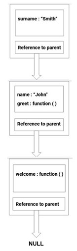

04 January 2021
Everything that is present in the current execution context is said to be in the current scope.
Note if you don't know what an execution context is and how JavaScript reads and executes code, I highly recommend you to read my previous post here.
Let's take an example to understand the scope.
let name="John";
function greet(){
let surname="Smith";
console.log(`Welcome ${name} ${surname}`);
}
greet(); // Welcome John Smith
During the execution of the above code, a global execution context is created and pushed onto the call stack.
The global execution context contains the variable name with the value of John.
When the greet function is invoked a new local execution context is created and push on top of the global execution context.
This local execution context contains the variable surname with a value Smith.
Now the surname is said to have a local scope or in other words, the scope of surname is inside the greet function.
This is because the surname is available only inside the local execution context created by the greet function and it will accessible only inside this function.
Also the variable name is said to have a global scope or in other words, the scope of name is global.
This is because the variable name is available inside the global execution context and it will accessible everywhere.
Whenever an execution context is created a lexical environment is also created.
A lexical environment is the execution context along with the reference to the lexical environment of the parent execution context.
Think of it as a container that consists of the current execution context and a reference to the lexical environment of the parent execution context.
We'll see a visual example of how the lexical environment works using the below code.
function introduce(){
let name="John";
function greet(){
let surname="Smith";
console.log(`Welcome ${name} ${surname}`);
}
return greet;
}
let welcome = introduce();
welcome() // Welcome John Smith

The first container is the lexical environment for the greet function.
It consists of a local execution context where the variable surname exists and it has a reference to the parent lexical environment which is for the introduce function.
The lexical environment of the introduce function contains the variable name and the function greet.
It also has a reference to its parent which is the global lexical environment.
The global lexical environment contains the variable welcome and it has a reference to its parent which is null.
The above image representing multiple lexical environments linked together by references is what is called the scope chain.
Whenever you are trying to access a variable, the JavaScript engine searches for that variable in the current scope.
If it is not found it uses the reference in the lexical environment and moves a level above in the scope chain and searches for the variable in the parent scope.
This is repeated until the variable is found or the scope chain is exhausted.
This is the role of the scope chain.
Now that we have covered the required prerequisites let us look at closures.
A lexical environment is what is called as closure or in other words it is referred to as a function bundled together along with the surrounding scope.
Since a closure is just a lexical environment every function in JavaScript forms a closure.
Let's see the same example again to understand closures.
function introduce(){
let name="John";
function greet(){
let surname="Smith";
console.log(`Welcome ${name} ${surname}`);
}
return greet;
}
let welcome = introduce();
welcome() // Welcome John Smith
Here the function greet forms a closure.
It will have access to all the variables present inside the current scope as well as in the parent scope even after the parent function has finished its execution.
Generally, when a function is done with its execution all the memory will be removed or garbage collected in order to save memory.
But here due to closure when invoking the function welcome the greet function will be executed and it will still have access to the variable name even after the function introduce is done with its execution.
One of the main use of closures is to have data privacy where the variables inside the outer function will be accessible only by the inner function.
In the above case the variable name is private and only the greet function can access it.
This is because the greet function is returned and when it is invoked later it still remembers the variable name due to closures.
Note that closures may lead to memory wastage as the variables that are present in the outer function will not be removed even after the execution of the outer function.
But modern JavaScript engines like V8 tend to optimize this and they remove those variables that are not reachable by any reference.
A scope refers to the variable and functions present in the current execution context.
A lexical environment is the current execution context along with the reference of the parent lexical environment.
It is created whenever an execution context is created.
A scope chain is the chain of multiple lexical environments linked together by references.
JavaScript engine uses the scope chain to identify whether the variable is accessible or not.
A closure is just a lexical environment or in other words, it is a function bundled together along with the surrounding scope.